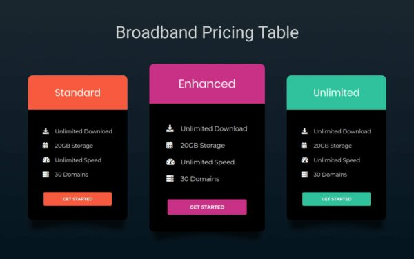

I bring to the table 14 years of experience in Strategy Planning, Operations Management, Financial & Investment Analysis, Client Relationship Management and Team Management. Among other things, my expertise includes good communication, strong analytical and problem-solving skills. Throughout my carrier, I have utilized my leadership, planning and analytical skills to consistently fuel performance & capability growth. List of accomplishments indicative of experience includes My goal is to transit my enthusiasm & experience into a position, where I continue to provide technical insights to achieve organizational goals. I am certain that my presence in your team will prove to be beneficial to your organization. As such, I would welcome an opportunity to speak with you to evaluate your needs & share my ideas. Effectively plan, install, configure and optimize IT infrastructures to achieve high availability and performance. - Expert in utilizing the full suite of financial analysis and planning tools to present an advice on investment, proposal, strategies, and models for clients. - Demonstrated skills and abilities in keeping projects on track even under difficult circumstances build consensus amongst all stakeholders and deliver exceptional results. - Outstanding communication talents with proven ability to build and lead highly efficient teams, to train technical personnel, and to convey complex concepts in understandable terms. - Highly successful in handling resources, assessing client needs, nurturing client relationships, supporting and motivating project teams, predicting risk factors, and identifying conflicting information
| Portfolio | Products | ||
|---|---|---|---|
| Who Am I | |||
| Education
M.com, MBA |
Experience 13 years in Finace and portfolio Management |
Project Digital Marketing , Online KYC , Virtual Account Opening |
Hobbies Playing chess , Reading Books |
| Achievements Best Perfomrer in TCS for the year 2008 SME in Sundaram Mutal Fund Hall of the Fame in Nippon |
Certificates Investment Analyst from CFA Instiute USA COC from Talent Rezourze for Amercican Ascent Course completion in IELTS from British Council |
| Available products | ||
|  |
 |
|
|
|
| Will serve you for better growth Please reach us |
|---|